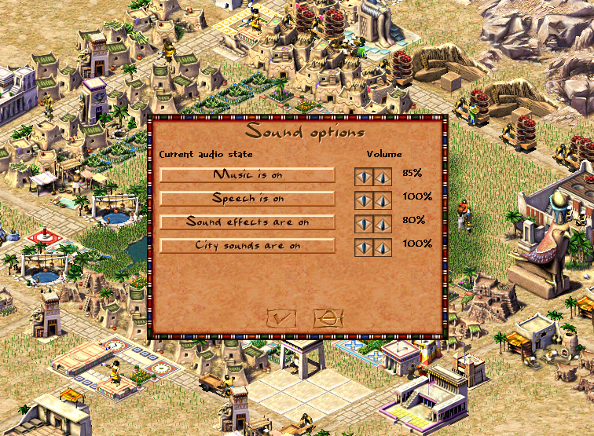

Sound Settings Window

Redesigned the sound options window with proper volume controls for all audio channels. The new implementation migrates sound settings to JavaScript configuration and improves the binding between UI controls and the audio system.
What Changed
The sound settings window now features individual sliders for five audio channels:
- Music — background music tracks
- Speech — character voices and narration
- Effects — UI sounds and action feedback
- Ambient — environmental sounds
- City — city-specific ambient audio
Technical Implementation
The redesign involved moving sound options logic to JavaScript (ui_sound_options_window.js) and refactoring the C++ sound system bindings. This follows the ongoing pattern of migrating UI logic from C++ to JS configs, making the codebase more maintainable and modular.
Key changes include:
- New
ui_sound_options_window.jsscript with 160+ lines handling the UI logic - Refactored
sound.cppto expose proper volume control APIs - Added
sound_js.cppfor JavaScript bindings (40 lines) - Improved slider controls with real-time audio feedback
Related Work
This continues the architectural improvements from earlier commits that moved game speed controls and other UI elements to JavaScript. The sound system also received updates for mod support and proper ambient sound lifecycle management.